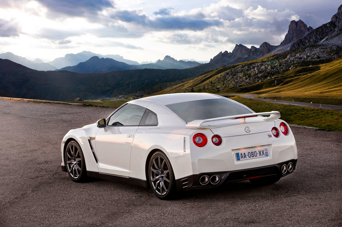

Nissan Skyline GTR-R34
 The fifth generation, known as the R34 kept the same 2.6 liter Twin Turbo engine from the previous models, but introduced a new chassis. The new car had a 50% stiffer body structure and was shorter than the R33. Improvements to the engine's valve timing and camshafts along with the ceramic turbocharger gave the engine an actual output of around 320 hp, although Nissan continued to advertise the car as having 280 hp. The 280 hp rule was a gentlemen's agreement in the Japanese auto industry, in which they adhered to the idea of not making cars with more than 280 horsepower in order to reduce high speed accidents. The R34 GT-R was also the first GT-R to feature a 5.8 inch LCD in the center console, that provided the driver with seven digitized information regarding the car's engine and dynamic parameters.
The fifth generation, known as the R34 kept the same 2.6 liter Twin Turbo engine from the previous models, but introduced a new chassis. The new car had a 50% stiffer body structure and was shorter than the R33. Improvements to the engine's valve timing and camshafts along with the ceramic turbocharger gave the engine an actual output of around 320 hp, although Nissan continued to advertise the car as having 280 hp. The 280 hp rule was a gentlemen's agreement in the Japanese auto industry, in which they adhered to the idea of not making cars with more than 280 horsepower in order to reduce high speed accidents. The R34 GT-R was also the first GT-R to feature a 5.8 inch LCD in the center console, that provided the driver with seven digitized information regarding the car's engine and dynamic parameters.
Nissan GTR R35
Between 1969 and 1974, and again between 1989 and 2002, Nissan produced a high performance version of its Skyline sedan called the Nissan Skyline GT-R. This car proved to be iconic for Nissan[8][9] and achieved much fame and success on road and track. The Nissan GT-R, although no longer carrying the "Skyline" badge, has heritage in the Nissan Skyline GT-R. Like the later generations of the Skyline GT-Rs, the Nissan GT-R is four-wheel drive with a twin-turbo 6 cylinder engine and has the signature four round tail lights. However, the GT-R is an entirely new model sharing little with its Skyline siblings and is a complete redesign from previous Skylines rather than an incremental evolution; the four-wheel-steering HICAS system has been removed and the former straight-6 RB26DETT engine has been replaced with a new V6 VR38DETT.[10] Because of the GT-R's heritage, the chassis code for the all-new version has been called CBA-R35,[11] or 'R35' for short (where CBA is the prefix for emission standard), carrying on the naming trend from previous Skyline GT-R generations. The GT-R has also retained its Skyline predecessor's nickname Godzilla,[12] given to it by the Australian motoring publication Wheels in its July 1989 edition. Additionally, the GT-R has carried over the tradition of using a twin-turbocharged 6 cylinder engine transmitting power through a 4-wheel drive system, much like previous generation GT-R's.


{kind=link}